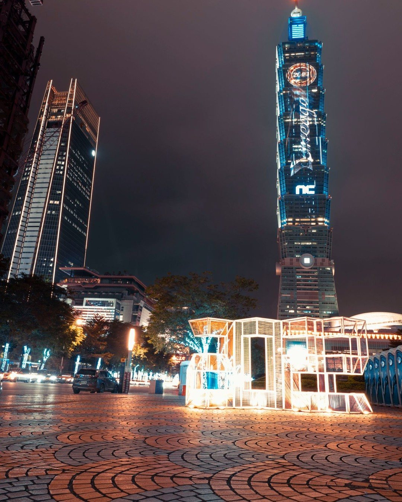
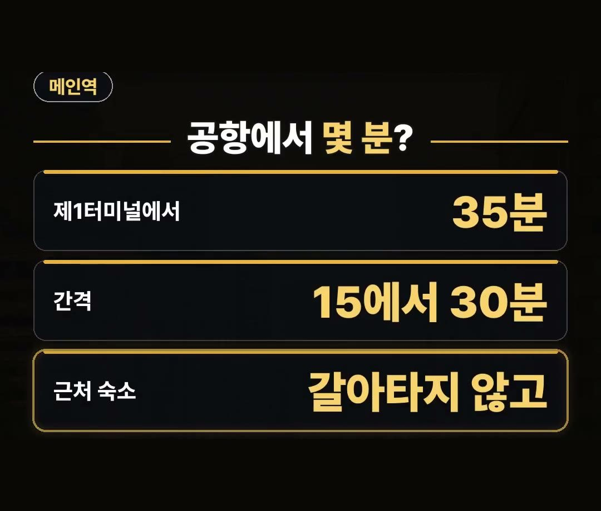
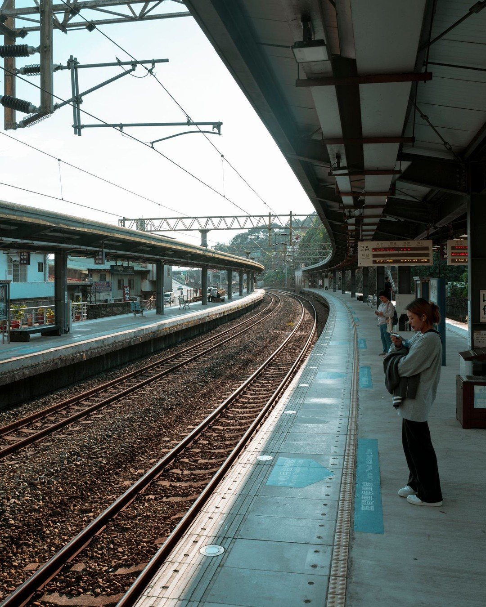
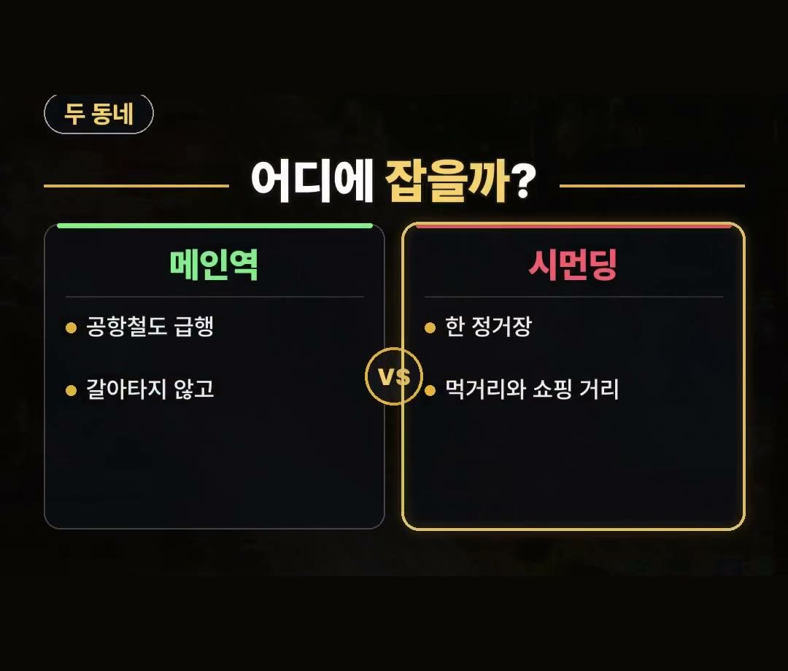
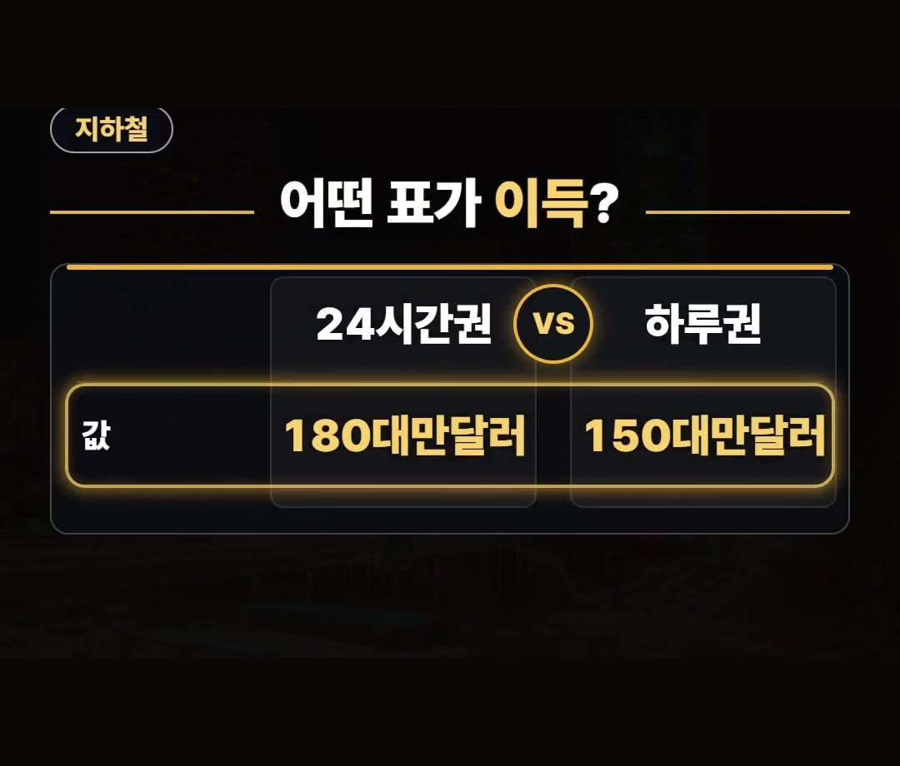

타이베이 숙소, 메인역과 시먼딩 중 이 동네에 잡는 이유
※ 이 글에는 제휴 링크가 포함되어 있으며, 링크를 통해 예약·구매하시면 일정 수수료를 받을 수 있습니다. (가격은 같습니다)
※ 이 포스팅은 쿠팡 파트너스 활동의 일환으로, 이에 따른 일정액의 수수료를 제공받습니다.
타이베이 숙소를 알아보다 보면 값도 위치도 다 달라서 어디에 잡아야 할지 고민되시죠?
처음 가는 여행이라면 숙소 값보다 동네를 먼저 정하는 것이 순서예요.
2026년 10월 기준으로 메인역 주변과 시먼딩, 두 동네를 공항 오가는 길과 지하철 표까지 묶어서 정리했습니다.
메인역은 타오위안 공항철도 급행이 서는 역이라 제1터미널에서 35분이면 닿아요.
근처에 숙소를 잡으면 갈아타지 않고 걸어갈 수 있으니 첫 여행이라면 꼭 기억하세요! 🧳
타이베이 숙소 위치 추천 — 처음이라면 이 두 동네
타이베이 숙소 위치 추천을 찾는 분들이 가장 많이 비교하는 곳이 메인역 주변과 시먼딩이에요.
처음 가는 여행이라면 이 두 동네가 유리합니다.
한쪽은 공항을 오가기 편하고, 다른 한쪽은 밤까지 걸어 다니며 놀기 좋다는 차이가 있어요.
아래에서 하나씩 살펴볼게요.

메인역 주변 — 공항철도 급행이 서는 역
메인역은 타오위안 공항철도 급행이 서는 역입니다.
공항을 오가는 날이 편해지는 것이 가장 큰 장점이에요.
- 제1터미널에서 메인역까지: 35분
- 급행 운행 간격: 15에서 30분
- 근처 숙소라면: 갈아타지 않고 걸어서 이동
큰 짐을 들고 지하철을 여러 번 갈아타지 않아도 된다는 점이 처음 가는 분들께 특히 편합니다.

늦은 밤 도착이라면 급행 운행 시간부터
공항철도 급행은 오전 6시부터 오후 11시까지 다닙니다.
늦은 밤에 도착하는 비행기를 탔다면 숙소를 정하기 전에 이 시간부터 확인하세요.
도착 시간이 운행 시간 밖이라면 메인역 숙소의 장점이 줄어들 수 있으니, 비행기 시간과 숙소 위치를 함께 보고 고르는 것이 좋아요.
특히 밤늦게 도착하는 날에는 숙소까지 가는 길이 짧을수록 몸이 덜 지치니, 비행기 표를 먼저 정했다면 그 시간에 맞춰 동네를 고르는 것도 방법입니다.

타이베이 숙소 위치 비교 — 메인역과 시먼딩
시먼딩은 메인역에서 지하철로 한 정거장입니다.
먹거리와 쇼핑 거리가 몰려 있어 밤까지 걸어 다니기 좋은 동네예요.
두 곳을 나란히 놓고 보면 이렇습니다.
- 메인역: 공항철도 급행, 갈아타지 않고 이동
- 시먼딩: 메인역에서 한 정거장, 먹거리와 쇼핑 거리
공항 오가는 길이 중요하면 메인역, 저녁 시간을 더 즐기고 싶다면 시먼딩 쪽으로 기울어 보세요.
두 동네가 한 정거장 거리라 어느 쪽에 묵어도 서로 오가기는 어렵지 않아요.

지하철 표는 24시간권과 하루권 비교
타이베이 지하철에는 24시간권과 하루권이 있습니다.
- 24시간권: 180대만달러
- 하루권: 150대만달러
하루 동안 지하철을 얼마나 탈지, 언제부터 쓰기 시작할지에 따라 맞는 표가 달라지니 일정을 보고 골라 보세요.

정리
- 타이베이 숙소는 처음이라면 메인역 주변과 시먼딩, 두 동네를 먼저 보세요.
- 메인역은 공항철도 급행이 서는 역으로 제1터미널에서 35분, 급행은 오전 6시부터 오후 11시까지 다닙니다.
- 시먼딩은 메인역에서 지하철로 한 정거장이고, 2026년 10월 기준 지하철 24시간권은 180대만달러, 하루권은 150대만달러입니다.
예약 링크는 아래에 모아 두었어요.
지금 쓸 수 있는 여행사 할인
- 📶 해외 데이터는 이심으로 미리 · 마이리얼트립 마이심 「대만 50% 1,200원~」 · 2개 이상 추가 할인 (마이심 화면 표시 기준 · 10/5 확인 · 값은 바뀔 수 있음)
※ 여행사 사정으로 조건이 바뀌거나 일찍 끝날 수 있어요. 예약 전에 여행사 화면에서 한 번 더 확인하세요. (2026-10-05 확인)
TAIPEI타이베이FREE📘 무료 타이베이 가이드 전자책공항·교통 · 돈 아끼는 법 · 맛집 · 근교 · 벌금·주의 · 귀국 날무료로 보기 ›📌 2026년 10월 기준 정보예요. 가격은 환율·시기에 따라 달라질 수 있어요.
영상 화면: Pexels (Annie Chen, Khan ishaan, Timo Volz, Wei86 Travel)
사진: Pexels (Jimmy Liao)
사진: Pixabay (MagicTV)